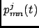
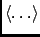
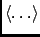
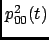

Next: Parameters
Up: Reorientational Correlation Function
Previous: Reorientational Correlation Function
Contents
Theory and implementation
The molecular reorientational correlation function is defined as the conditional probability to find a molecule with
orientation at time , given it had the orientation at time . In the following
this probability will be denoted by
. Here denotes a set of angular
coordinates, as Euler angles or quaternion parameters. The joint probability
which
gives the probablity to find a molecule with orientation at time and with orientation
at time , can be expressed as
.
Here
is the probability to find a molecule with orientation at time . If we
consider an isotropic system in thermal equilibrium the reorientational correlation function depends only on the time
difference, , and the change in orientation, , i.e.
. In addition we have
, where is the volume of the angular space.
The reorientational correlation function may now be expanded in Wigner rotation matrices [62] which form a complete
set of basis functions in [63,64]:
In the following the coefficients  are called p-coefficients. Using the orthogonality of the Wigner functions,
Eq. (4.110) can be inverted to give:
 |
(4.112) |
Writing the reorientational correlation function as
where
is the orientation of molecule  with respect to its initial orientation and
 is a thermal average, relation (4.112) can be written as
with respect to its initial orientation and
 is a thermal average, relation (4.112) can be written as
The p-coefficients can also be expressed as time correlation functions of irreducible tensor components. This is convenient
for numerical purposes since time correlation functions of discrete and finite time series can be very efficiently computed
by Fast Fourier Transform techniques (see Section A). Consider the general form of the time correlation function
where are the components of an irreducible tensor [63,64]. From the transformation properties of
irreducible tensors it follows that
For an isotropic system in thermal equilibrium we may now write
Inserting this in (4.115), performing a change in the integration variables from
to
, and using the orthogonality of the Wigner functions one
can show that
where the components are referred to a convenient reference frame. In practice only tensors with integer  are relevant. In this case, the well known spherical harmonics [63,64] may be used to define irreducible tensors.
They are related to the Wigner functions by
are relevant. In this case, the well known spherical harmonics [63,64] may be used to define irreducible tensors.
They are related to the Wigner functions by
where
are Euler angles. Following ROSE [65] the Wigner functions can be expressed as
complex polynomials in the quaternion parameters:
Here the quaternion parameters describe the rotation of the space-fixed coordinate system into the body-fixed coordinate
system. The corresponding rotation matrix is given in Eq. (4.52). According to Eq. (4.119) the spherical
harmonics are just special cases of the Wigner functions,
Using the normalization of the spherical harmonics and Eq.
(4.118) one arrives at the following expression
for the p-coefficients
The following relations for the p-coefficients hold:
The coefficients are the components of the
unit matrix. The initial value of the
the p-coefficients is an immediate consequence of definition (4.112) and
. Eq. (4.124) follows from the symmetry of the Wigner functions
and the symmetry of classical time correlation functions.
Since measurable quantities must be real it follows from (4.124) that only p-coefficients with can be
directly measured. is measured by infrared spectroscopy (dipole-dipole correlation function) and
 by relaxation NMR experiments. Here one measures in most cases the integral over .
Next: Parameters
Up: Reorientational Correlation Function
Previous: Reorientational Correlation Function
Contents
pellegrini eric
2009-10-06